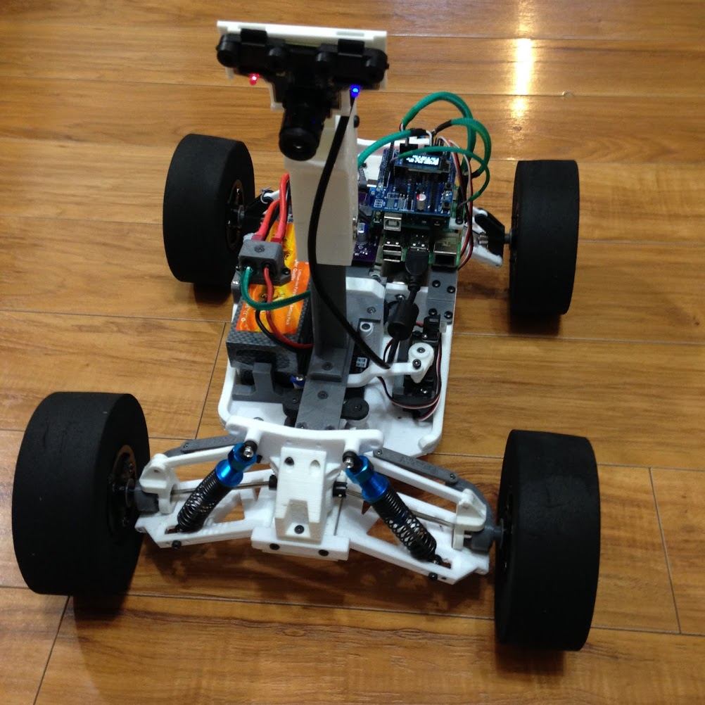

FrostAV: Lane & Sign Detecting Tenth-Scale Vehicle
Table of Contents
1 Introduction
Autonomous vehicles need to be able to follow a path, and react to environmental queues. The research that encompasses autonomous vehicles is not only useful for self-driving cars, but also within factory settings and places where transportation work can be automated.
We 3D printed a vehicle, which holds a raspberry pi 4, Arduino, and a $5 USB camera, that is capable of following a lane and reacting to signs. This project demonstrates a real-time object detection network, a web server, and a lane detection system all simultaneously running on a $35 raspberry pi computer. In total, the cost of all parts on our vehicle is around $160.

Figure 1: 3D-printed tenth-scale chassis.
2 Vehicle Monitoring with a Web Server
2.1 Front-End: FPV Live Stream & System Statistics
Everything starts with the server on the Raspberry Pi. On the server we have a website that allows us to monitor the vehicle from a client device. At the top, we have an FPV livestream (see figure 2). Here we can examine the internals of our image processing system. The livestream is achieve by long-polling JPEG images from our main (Python) application to our website.

Figure 2: Snapshot from the vehicle's website illustrating the FPV livestream. We can choose the type of frame we want to see (e.g. the LAB color-space frame) and the type of annotations we want to see (e.g. lane state and lane lines).
We are also logging various system statistics, like load, temperature, and memory. Load is measured in number of jobs in the run queue averaged over a minute. Thanks to our custom designed power supply, we can also view power usage, battery voltage and current draw (see figure 3).
Figure 3: Snapshots from the vehicle's website illustrating Raspberry Pi system load, memory, and temperature, as well as power supply power, voltage, and current over time.
2.2 Server Overview: Flask, GUnicorn, and Nginx
We use Flask, GUnicorn, and Nginx. Let's work our way down, from the website, to our application code (in python).
Nginx acts as our web server, fulfilling requests from clients for static content from our website (e.g. HTML pages, files and images). Nginx forwards dynamic requests (e.g. all of the requests that we want Python to handle) to GUnicorn, our application server.
GUnicorn ensures that Nginx and our Flask Python application can talk to each other. Ultimately, GUnicorn routes requests (passed through Nginx) to their corresponding function in our Flask application.
Flask is a web microframework in the form of a Python library. It is used in our Python application to provide functions that can receive requests, and return a response (e.g. sensor data). See figure 4.

Figure 4: The client can see the server's website by typing in the server IP into a browser. All static requests, for the website, like html pages, styles and images, are handled directly by Nginx. Dynamic requests, for fetching system statistics for example, are routed to GUnicorn and then to our Flask application.
2.2.1 Example: Real-Time Sensor Reading
We have real-time plots on our front-end that request sensor data. Eventually, we expect to receive this sensor data from a URL of our choice (e.g. "/sensor_reading"). These requests are sent to Nginx, which are then passed to GUnicorn (since they are dynamic requests). GUnicorn sends the requests to a function in our python application that is registered for the formerly mentioned URL. The function is registered with the given URL using Flask. This function has code to get sensor data from the underlying linux system (typically, by reading a sensor file or running a shell command). Finally, the function returns a response which contains the sensor data.
2.3 Installing Nginx, Flask, and GUnicorn
Since we are using Arch Linux ARM on our Pi, we used Arch Linux's
package manager pacman for Nginx and Gunicorn. We used pip to
install Flask.
sudo pacman -S nginx sudo pacman -S gunicorn sudo pip install flask
2.4 Starting the Server the First time
For ease, this repository was cloned on our Raspberry Pi to the user
directory (e.g. "/home/alarm"). In the frostServer/config directory,
there is a setup script1 which does the following:
- links the frostServer.service to the system directory;
- links the frostServer.nginx config file to nginx's enabled-sites directory;
- enables both the nginx and the frostServer services;
- starts both services.
Now, on a computer connected to the same WiFi as our Pi, we can type the IP of the Pi into the browser search bar (e.g. "192.168.0.106") and the Frost website appears. Since we enabled the server service, the server will start at boot without any user intervention.
2.5 Automation System
The server is also responsible for starting the automation system. The automation system begins in code with a Frame Subject (see README.org.d/figure 5), which is a simple object that captures images, or as we will call them, frames, continuously from the camera. We have two models which take a copy of each frame: the Lane Model, and the Sign Detection Model. Since these models are both computationally expensive, we set them up to process the frames from the Frame Subject in their own thread. This ensures that other parts of our application are not slowed down by these models. It is also important to note that these models are fully independent from each other. That is, one model does not affect the result of the other model.
Figure 5: Illustrates the Frame Subject being started (as a thread) from the server (Flask) application code, from which, the lane and sign detection models can pull camera frames.
3 Lane Detection
3.1 Summary
The goal of the Lane Model is to detect a lane and to find the error between the vehicle's trajectory and the center of the lane. As the vehicle is driving, we will try to minimize this error, shown in figure 6, by steering the vehicle accordingly.
Figure 6: Error generated by the lane model that will be used to steer the vehicle.
As stated before, the Frame Subject is responsible for fetching frames from the camera. These frames are unprocessed and in RGB format (see figure 7). Before extracting the lane lines, and subsequently, an error value, we need to send the frame from the Frame Subject through a series of filters.
Figure 7: The raw frame we pull from the Frame Subject.
3.2 Black and White Lane Mask from Raw Frame

Figure 8: Block diagram of the 3 steps we used to get a masked frame from the raw frame.
The incoming frame is in RGB format. The RGB channels are highly sensitive to changes in light, meaning that slight changes in environmental lighting, will change our model's ability to detect lane lines. As an antidote, we convert the frame to the LAB color space. The LAB color space seperates the luminosity of the frame into its own channel, so the other two channels, which represent color, are less succeptible to changes in light. This allows us to tune our model to look for a specific color, that is mostly independent from lighting conditions.
We are using blue painters tape as lane lines. So, we pass the LAB frame into a masking operation which creates a black and white frame, where the lane lines are masked out as black, and the background, is white.
The masked frame typically has noise. We use a median blur to reduce the noise. Median blur slides a small window across the frame and for each pixel, replaces it with the median of the pixel intensities for the window.
Figure 9: Illustrates 3 steps to get a black and white mask of the lane lines, including, (left) converting the RGB frame to LAB, (middle) masking for the color of the lane lines, and (right) applying a median blur to reduce noise.
3.3 Line Segment Coordinates from Lane Mask

Figure 10: Canny Edge Detection and Hough Line Transform are used to get lane line coordinates from the masked frame.
Canny Edge detection is done next, yielding edge features by looking for significant gradients in pixel intensity. Additionally, we know where in the frame the lane should be, so we simply ignore everything outside of the region that should contain the lane. This reduces the number of edge features which are not part of the lane, and parts of the lane which are not important yet.
Furthermore, we get line segments using the Hough Line transform, which returns the endpoint coordinates of edges that are specifically straight lines.
Figure 11: Illustrates 3 steps to get lane line coordinates, including, (left) finding edge features with Canny Edge Detection, (middle) Applying a region-of-interest, and (right) using the Hough Line Transform to find straight line coordinates from the remaining edge features.
3.4 Lane Angle Error from Line Segment Coordinates

Figure 12: The lane lines are average and used to detect the state of the lines (both, left, right or none) and the angle of the line, which we use to approximate lane error.
We need to get only two lines that represent the lane. So, we seperate all segments with bottom intercepts on the left side of the frame from those on the right side of the frame. Then, we average the two groups of segments, to get the left and right lane lines.
When two lines are detected, the error between the vehicle's trajectory and the lane, we currently define as the difference between the angle of the bottom intercept of the left and right lines from the center of the frame. In our case, a positive error means the vehicle needs to steer left, and a negative error means the vehicle needs to steer right. If only one line is detected, we use a state machine which estimates the error between the line and a user-specified calibration angle. If no lines are detected the error does not change. The final error is illustrated in figure 6.
4 YOLOv3 Real-Time Sign Detection
4.1 Example Results
Figure 13: Stop sign images on a monitor (left), and the processed video feed (right).
4.2 Choice of Object Detector
Object detection and classification is as simple as, detect signs then classify –not exactly. This is how object detection2 algorithms started (e.g. R-CNN), but they can be too slow for real-time (and embedded) object detection. Those looking for speed, use algorithms that extract classified objects from the frame in a single pass, as opposed to two passes. YOLOv3 is an algorithm that detects in a single pass, such that it detects and classifies signs at once.
There are multiple versions of YOLOv3. We are using YOLOv3-tiny-prn, which has the highest frames per second (FPS) compared to other commonly used algorithms (see figure 14). The sacrifice for speed is accuracy, as YOLOv3-tiny-prn borders around 35% average precision. Since we implemented sign detection on a Raspberry Pi as a proof-of-concept, this accuracy is acceptable.
Figure 14: YOLOv3-tiny-prn has the highest FPS, with an acceptable 35% average precision.
4.3 YOLOv3 Implementation

Figure 15: The frame is formatted to fit in our YOLOv3 network, after the formatted frame is passed in, the resulting predictions are filtered by non-max suppresion and sent to the vehicle control model.
Before we started the automation system, we used OpenCV to import our trained Darknet3 YOLOv3 model configurations. This allows us to pass frames into our custom-trained YOLOv3 network and receive sign predictions.
As the automation system is running, the incoming frame from the frame subject is first formatted for our YOLOv3 sign detection neural network. This includes scaling the image by \(1/255\) so the image fits in our network, and flipping the blue and red channels. Subsequently, the formatted frame is passed into our YOLOv3 network. The network outputs predictions that include the name of the predicted sign, and the bounding box which provides the location of the sign. We pass this output through a non-max suppression algorithm to potentially reduce the number of overlapping predictions. This is all we need from our sign detection model. The predictions are now sent to the vehicle control model.
4.4 Training the YOLOv3 Network
4.4.1 Dataset: GTSDB
We trained our network on the GTSDB dataset containing 900 images from the point-of-view of vehicles on a road.
Figure 16: An example image from the GTSDB dataset
4.4.2 YOLOv3 Darknet
We trained out YOLOv3 network with Darknet. Darknet requires that we provide it with annotations for each image. Annotations include information about the bounding box and class of each sign in an image. The GTSDB dataset we are using contains an annotation file but it is not in the same format as what Darknet requires. We use a script to convert this annotation file to the Darknet annotation format (as illustrated in figure 17).
Figure 17: Darknet annotation file, 00001.txt, for a single image 00001.jpg. The file contains only space-seperated numbers, with five fields.
We can train using Darknet as an executable and supply it with a directory configuration file and a model layers configuration file.
Figure 18: A typical darknet command to train our YOLOv3 network. yolov3-tiny.conv.11 is a trained network provided by Darknet, and we use it for transfer learning.
In reference to figure 18, our sign.data file
looks like
classes = 43 train = <data directory>/train.txt valid = <data directory>/test.txt names = <data directory>/sign.names backup = <weights directory>
And, a directory setup may look as follows:
- cfg - yolov3-tiny.conv.11 <Trained network (from Darknet), used for transfer learning> - yolov3-tiny-prn.cfg <Network layer configuration> - data - images_jpg <raw jpg GTSDB images> - images_ppm <GTSDB images converted to PPM> - labels <Darknet text lettering> - obj <Mixed PPM images and Annotations> IMPORTANT - sign.data <directory configuration file> - sign.names <class names sperated with a newline> - test.txt <absolute path to testing images> - train.txt <absolute path to training images> - weights - yolov3-tiny-prn_best.weights <Output from Darknet>
4.4.3 Training/Testing Distribution of Images
We created the test.txt and train.txt files (mentioned in the
previous section) by randomly selecting a proportion of images to
be training images and testing images, and then providing the
absolute path of the images in their respective test.txt or
train.txt file.
Figure 19: Distribution of testing images.
Figure 20: Distribution of training images.
These distributions have some classes with only a few or no images. This causes a lower average precision for our network, since it does not have enough of those images to train and test on.
4.4.4 Results
We obtained a mean-average precision on the validation set of around 10% (see figure 21). However, more specifically, the average precision for easy to classify signs (such as stop signs and yield signs) was much higher than signs which had few training images, and signs that relied on textual classification (such as speed limits). On the Raspberry Pi, the YoloV3 network operates at around one frame-per-second (see figure 22).
Figure 21: mean average precision over 6000 training iteration at around 10%. Loss (in blue) drops quickly, due to transfer learning.
Once the model was trained, we loaded the model into our main application on the Raspberry Pi. We added the option, in the side-panel of our livestream, to show detected signs. Now, on the vehicle's website we can see the bounding box and class of detected signs (as seen in figure 22).
Figure 22: Sign detection on the Raspberry Pi. Detects signs at about 1 frame-per-second.
5 Vehicle Control Model
5.1 Control Value Packaging on the Raspberry Pi
5.1.1 Summary
The vehicle control model contains the decision making for controlling the vehicle. We use the lane error, we got from the lane model, to proportionally control the steering and driving. The signs, we get from our sign detection model, are pushed to a queue and, handled by the drive controller. Currently, we are only reacting to stop signs. If a stop sign is detected, the drive controller outputs a drive value which stops the vehicle. The final drive and steering values, determined by the drive and steering controllers, are sent over I2C to the Arduino which maps the values to a pulse-width to control the steering servo and the Electronic Speed Controller for the drive motor.
Figure 23: Lane error and detected signs are used to control the driving and steering values send to the Arduino over I2C.
5.2 Vehicle Interface Controller (Arduino)
5.2.1 Overview
We are using an Arduino Uno to take in i2c steering and drive values to control the vehicle's steering servo and electronic speed controller (ESC). We refer to the Arduino as the Vehicle Interface Controller (VIC).
The VIC is programmed in C++ (not using Arduino's packages). This gives us control over the implementation details of utilities like strings, pwm, usart, and i2c. Note that this decision was made for our own academic curiousity.
5.2.2 Application Makefiles
The VIC uses GNU Makefiles. We have modularized the makefile
process, such that when starting a new application file (i.e. a
source file which contains main) the makefile to build the
application only needs to contain
TARGET = <name of your application> ROOT = ../.. include $(ROOT)/mk/all.mk
where ROOT is the directory that contains the mk directory.
5.2.3 Making a New Application
We have included a bash script in app called createNewApp. To
make a new application, we can go to the app directory and run
./createNewApp <name of application>
This script ensures there are no existing applications and if that is true:
- will make a directory with the same name as our application;
- will make a
cppsource file with the name as our application; - will create a Makefile, filled with everything necessary to build our application.
5.2.4 Flashing the Arduino
To flash the Arduino, we go to the directory of an application (in
the app directory), and then we run make flash. The build files
are exported to the app/build directory.
5.2.5 Serial Interface
To communicate with the Arduino, via Serial, we use picocom, a
linux terminal utility. As part of our modular makefile system, we
can open picocom by going to the directory of an application (in
the app directory), and running make com.
6 Conclusion & Necessary Improvements
We demonstrated the ability for a low-cost, $35 Raspberry Pi 4, to run a web server, lane detection system, and sign detection system. The method we used for calculating lane error has edge cases which make it inaccurate, (such as if the vehicle is outside the lane lines). This method would need to be improve the reliability of the vehicle navigation. Our sign detection model runs at about 1 frame-per-second, which would need to be increased (through optimizations) if we want the vehicle to travel faster. Increasing the speed of the vehicle now, generally results in a sign being missed.
Footnotes:
The setup script should be run as sudo.
Classification is not detection. Objects first need to be detected before they can be classified. But, for briefness, we say "object detection" when we really mean "object detection and classification."
Darknet is an open source neural network framework.